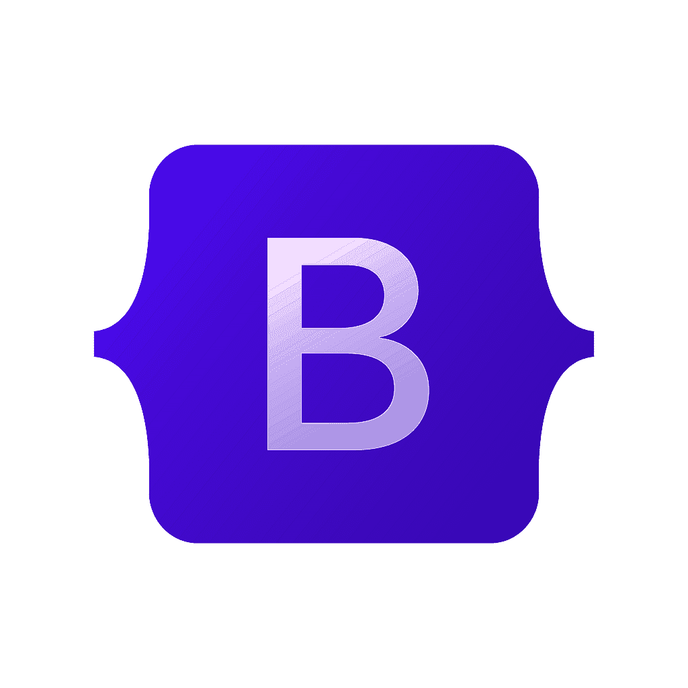
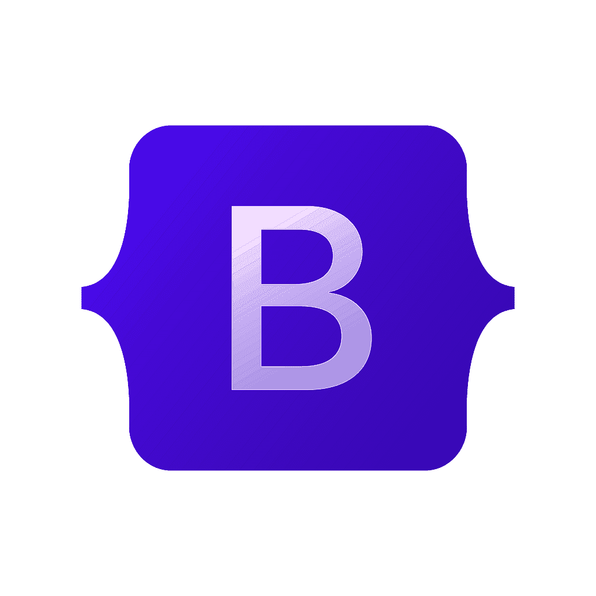
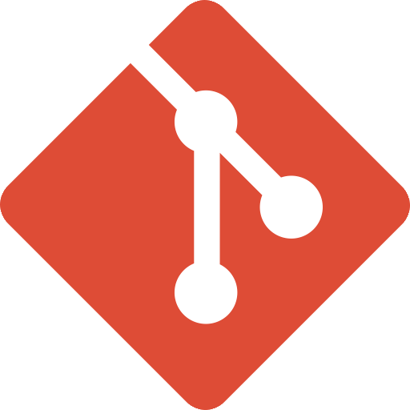
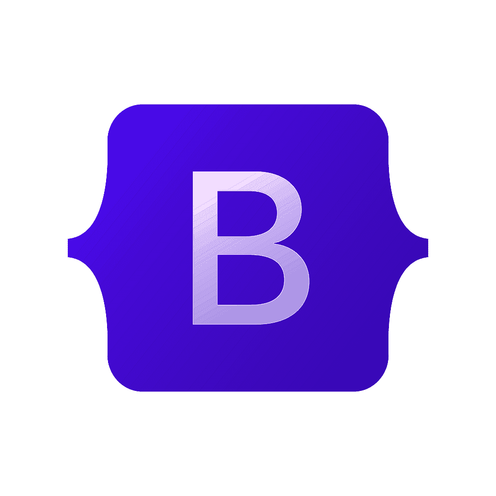
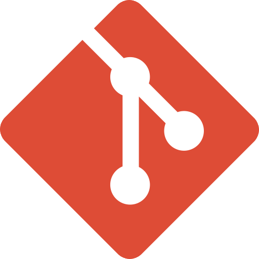
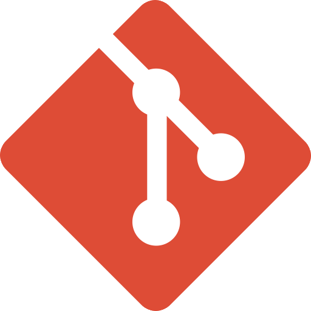
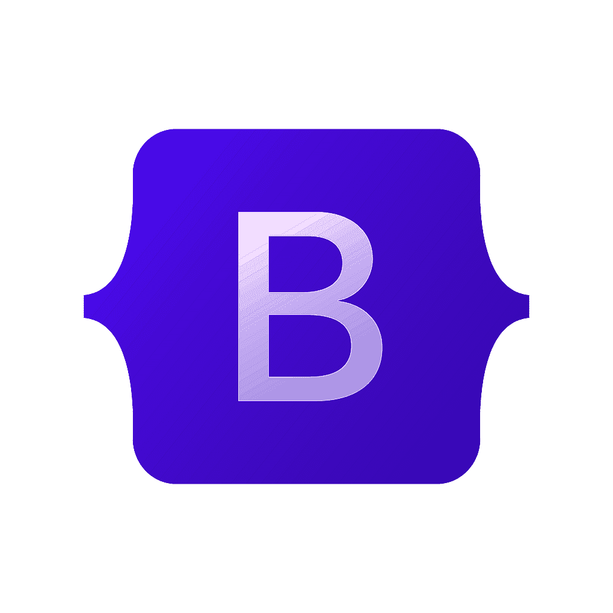
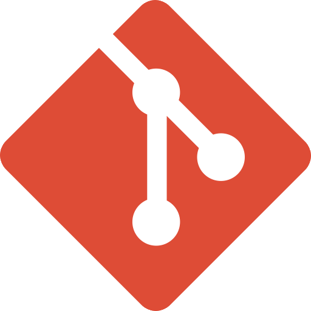

 





Junior Front Developer With a
Graphic Design Background.
I build clean, responsive, and user-friendly web interfaces using HTML, CSS, JavaScript, and Bootstrap.
My focus is on structure, performance, and usability to create reliable websites that clearly communicate goals and deliver smooth user experiences.
My work centers on translating UI designs into clean, modern,
and maintainable code with HTML, CSS, JavaScript, and Bootstrap, ensuring strong performance and seamless user interaction. Ultimately, my goal is to deliver reliable digital experiences that stand out, support long-term growth, and leave a lasting impact.
I provide technical web development services designed to help brands build clear, effective, and reliable digital experiences. Through clean code, structured development, and attention to performance, I turn ideas into functional and user-friendly websites. My goal is to help every brand stand out online and connect with its audience through well-built web interfaces.
I enjoy working with modern web development tools that help me build, test, and refine my ideas efficiently. These tools allow me to lead organized workflows, experiment with functionality, and continuously improve my technical skills. They play an important role in delivering reliable, high-quality web solutions.
Show MoreDeveloping modern web interfaces that adapt seamlessly to all screen sizes and devices. Enhancing user experience through smooth animations, interactive elements, and intuitive user flows. Delivering fast, visually appealing, and user-friendly interfaces that improve engagement and usability.
Show MoreDeveloping structured, scalable, and well-organized web interfaces using modern front-end technologies. Focusing on clean code, performance optimization, and seamless user interaction across different devices. Building reliable and maintainable interfaces that support usability, accessibility, and long-term growth.
Show MoreI enjoy working with modern web development tools that help me build, test, and refine my ideas efficiently. These tools allow me to lead organized workflows, experiment with functionality, and continuously improve my technical skills. They play an important role in delivering reliable, high-quality web solutions.
styles and objectives. styles and objectives. Each project reflects my approach to web development, clean code, and technical problem-solving. Together, they highlight the skills, structure
Here, you can explore more about who I am as a person from my educational background and the skills I’ve developed to the experiences that have shaped my journey and career.
I studied at the Faculty of Social Work, where I developed strong communication skills, problem-solving abilities, and an understanding of human behavior.
These skills helped me work effectively with clients, understand their needs, and translate them into creative design solutions and functional digital experiences.
Graphic Design Internship
During my graphic design training, I worked on a wide range of creative tasks, including video editing, GIF creation, and social media content. I consistently delivered visually appealing designs that matched the brand’s identity and communication goals. This experience helped me improve my technical skills, creativity, and ability to work under deadlines.
Remotely Graphic Designer
It is a Jordanian company operating in the Jordanian, Saudi, and Iraqi markets, serving clients across various industries. During my time there, I created social media designs, Instagram carousels, logos, full visual identities, and essential print materials. I also designed key PDF documents and proposals, ensuring high-quality visuals that aligned with each client's brand.
{kind=link}
{kind=link}